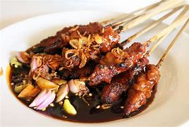
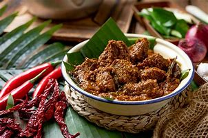

Nasi Goreng

Nasi goreng adalah salah satu hidangan populer di Indonesia yang terdiri dari nasi yang digoreng bersama dengan berbagai bahan lainnya, seperti daging, ayam, udang, telur, sayuran, dan bumbu-bumbu lainnya. Bahan-bahan ini biasanya dicampur dan digoreng bersama-sama dalam minyak atau margarin, kemudian diberi tambahan bumbu seperti kecap manis, bawang putih, bawang merah, cabai, dan kecap asin. Nasi goreng sering disajikan dengan acar timun atau tomat, kerupuk, dan potongan telur dadar sebagai hiasan.
Sate Ayam
Sate ayam adalah hidangan khas Indonesia yang terdiri dari potongan daging ayam yang ditusuk menggunakan tusuk sate, kemudian dipanggang atau dibakar di atas bara api. Daging ayam biasanya sudah dibumbui dengan campuran rempah-rempah sebelum dipanggang, seperti bawang putih, ketumbar, kunyit, dan garam. Sate ayam sering disajikan dengan bumbu kacang yang kental atau saus kecap untuk memberikan cita rasa yang kaya dan lezat. Ini adalah hidangan yang sangat populer di Indonesia dan sering dijual di warung atau restoran, serta menjadi favorit di acara-acara sosial.
Rendang
Rendang adalah hidangan khas Indonesia, khususnya dari daerah Minangkabau di Sumatera Barat. Ini adalah masakan daging yang dimasak dalam campuran bumbu rempah-rempah yang kaya dan santan kelapa, hingga cairan santan tersebut menguap dan bumbu meresap sepenuhnya ke dalam daging. Rendang biasanya menggunakan daging sapi, meskipun ada juga variasi dengan daging lain seperti ayam atau bebek.
Gado-gado (fight-fight)

Gado-gado adalah salah satu hidangan khas Indonesia yang terdiri dari campuran sayuran segar yang direbus atau dikukus, seperti kacang panjang, taoge (kecambah), wortel, kentang, kol, dan lain-lain, yang kemudian disajikan dengan saus kacang dan bumbu lainnya. Hidangan ini sering disajikan dalam bentuk salad, di mana sayuran-sayuran tersebut disusun di atas piring atau mangkuk, kemudian diberi saus kacang yang kental dan bumbu seperti bawang goreng, kerupuk, dan kadang-kadang telur rebus.
Bakso

Bakso adalah salah satu hidangan yang sangat populer di Indonesia. Ini adalah semacam bola daging yang terbuat dari campuran daging sapi atau ayam yang dicincang, tepung tapioka, dan berbagai bumbu rempah-rempah seperti bawang putih, garam, merica, dan sebagainya. Campuran ini kemudian dibentuk menjadi bola-bola kecil dan direbus dalam kaldu sapi atau ayam hingga matang.
Soto Ayam

Soto ayam adalah hidangan sup khas Indonesia yang terdiri dari kaldu ayam yang kaya rasa, potongan daging ayam, mie (biasanya mie kuning), dan berbagai bahan tambahan seperti telur rebus, tauge (kecambah kacang hijau), irisan daun bawang, seledri, bawang goreng, dan seringkali kentang goreng. Hidangan ini disajikan panas dan biasanya disajikan dengan tambahan jeruk nipis, kecap manis, dan sambal sebagai bumbu tambahan.